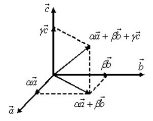

4.3. Базис и координаты
Базисом в пространстве будем называть три
некомпланарных вектора, взятые в определенном порядке.
Базисом на плоскости будем называть два
неколлинеарных вектора на этой плоскости, взятые в определенном порядке.
Базисом на прямой будем называть любой ненулевой
вектор этой прямой.
Каждый вектор может быть разложен по базису в пространстве и
это разложение единственно.
Иначе, если  ,
,  ,
,  –
три некомпланарных вектора в пространстве, то любой вектор
Разложение
вектора по трем некомпланарным векторам
может быть записан в виде: .
–
три некомпланарных вектора в пространстве, то любой вектор
Разложение
вектора по трем некомпланарным векторам
может быть записан в виде: .
, , –
три некомпланарных вектора в пространстве, то любой вектор
Разложение
вектора по трем некомпланарным векторам
может быть записан в виде: .
Доказательство возможности:
Пусть – некоторый базис
в пространстве, – произвольный вектор. Тогда
только при
.
,
при этом , так как если , то
,
а этого быть не может, т.к. -
базис.
Тогда
, , .
Доказательство единственности:
Предположим, что существуют два разложения вектора по базису ,
то есть
; .
Вычтем из одного равенства другое:
.
Так как - базис, ни один
из векторов не может быть выражен через другие
при ненулевых коэффициентах, поэтому
.
Геометрически вектор представляет
собой пространственную диагональ параллелепипеда, построенного на векторах  ,
,  и
и  .
.
, и .Коэффициенты разложения вектора по базису называются координатами
вектора в данном базисе и в каждом базисе определяются однозначно:
Координаты
вектора в данном базисе
.
При сложении двух векторов и
их координаты (относительно любого
базиса) складываются. При умножении вектора на
любое число  все его координаты умножаются на это
число.
все его координаты умножаются на это
число.
все его координаты умножаются на это
число.Доказательство:
Пусть
, .
Тогда в силу свойств 1˚-7˚ линейных операций
над векторами
,
.
В силу единственности разложения вектора по базису
теорема доказана.
Системой координат в пространстве называют совокупность
базиса и некоторой точки, называемой началом
координат.
Вектор  , идущий из начала
координат в точку
, идущий из начала
координат в точку  , называется радиус-вектором
точки . Координатами точки называются координаты вектора .
, называется радиус-вектором
точки . Координатами точки называются координаты вектора .
, идущий из начала
координат в точку , называется радиус-вектором
точки . Координатами точки называются координаты вектора .Таким образом, координаты радиус-вектора и координаты точки совпадают.
и координаты точки совпадают.